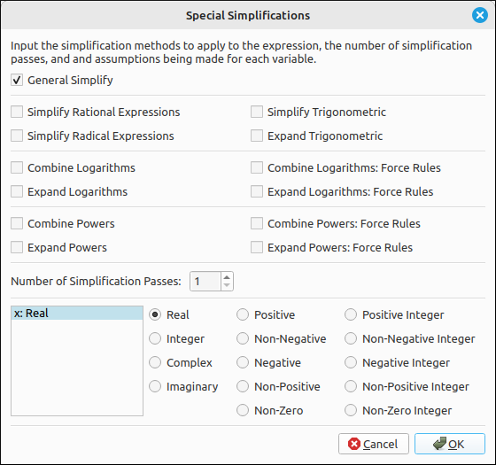

Simplification#
One of the most used options will be to simplify expressions. This program offers several ways to simplify expression, including lists, matrices, and piece wise defined expressions. The Simplify option is a general simplify routine and the Special Simplifications allows more control over what is manipulated.
Simplify#
This is a general simplifying function that will be sufficient for the majority of expressions you need to simplify. Simply select the item in the CAS you want to simplify and then select this option. The simplified version will be loaded as a new expression in the CAS. This option works on simple expressions, matrices, and lists of these.
Simplify Assuming Real Variables#
This is a general simplifying function as with Simplify except that it will assume that all variables represent real numbers. The SymPy computer algebra system was designed to process expressions assuming that the variables represent complex numbers. The system does allow the user to select specific domains for individual variables and a more detailed tool for doing this is the Special Simplifications. This option will assume that all variables represent real numbers and is quicker than selecting the Special Simplifications option. Simply select the item in the CAS you want to simplify and then select this option. The simplified version will be loaded as a new expression in the CAS. This option works on simple expressions, matrices, and lists of these.
Special Simplifications#
The special simplification options are for fine tuning the methods used for the simplifications. When this option is selected the following dialog box will appear. The top portion is the set of special methods that can be applied and the bottom portion is the assumptions that you can specify for the variables.

Special Simplifications Dialog Box#
Simplification Methods#
General Simplify#
This is simply a general simplification method that incorporates several of the methods below. In most cases this will produce a reasonable, but possibly not complete, simplification of the expression.
Simplify Rational Expressions#
This will simplify rational expression.
For example,
simplifies to
Simplify Radical Expressions#
This will simplify expressions that contain radicals.
For example, the expression, ((2 + 2*sqrt(2))*x + (2 + sqrt(8))*y)/(2 + sqrt(2))
simplifies to
Simplify Trigonometric#
The Simplify Trigonometric option will combine trigonometric identities when possible.
For example, if we start with the expression,
This option will produce,
Expand Trigonometric#
The Expand Trigonometric option will expand trigonometric identities when possible.
For example, if we start with the expression,
This option will produce,
Combine Logarithms#
This option will combine logarithms when possible. It applies the two identities \(\log_b(x) + \log_b(y) = \log_b(x y)\) and \(a\log_b(x) = \log_b(x^a)\) if the variables are in the correct domains. There are two options that combine logarithms, the Combine Logarithms option will check the validity of the domains for the variables and the Combine Logarithms: Force Rules will skip the domain checks and apply the above identities to the expression. In this case, keep in mind that you are assuming that these rules apply to your expression.
For example, if we have the expression,
this option will produce,
Expand Logarithms#
This option will expand logarithms when possible. It applies the two identities \(\log_b(x) + \log_b(y) = \log_b(x y)\) and \(a\log_b(x) = \log_b(x^a)\) if the variables are in the correct domains. There are two options that expand logarithms, the Expand Logarithms option will check the validity of the domains for the variables and the Expand Logarithms: Force Rules will skip the domain checks and apply the above identities to the expression. In this case, keep in mind that you are assuming that these rules apply to your expression.
For example, if we have the expression,
this option will produce,
Combine Powers#
This option will combine powers when possible. It applies the two identities \(x^a y^a = (x y)^a\) and \(x^a x^b = x^{a+b}\) if the variables are in the correct domains. There are two options that combine powers, the Combine Powers option will check the validity of the domains for the variables and the Combine Powers: Force Rules will skip the domain checks and apply the above identities to the expression. In this case, keep in mind that you are assuming that these rules apply to your expression.
For example, if we have the expression,
this option will produce,
Expand Powers#
This option will expand powers when possible. It applies the two identities \(x^a y^a = (x y)^a\) and \(x^a x^b = x^{a+b}\) if the variables are in the correct domains. There are two options that expand powers, the Expand Powers option will check the validity of the domains for the variables and the Expand Powers: Force Rules will skip the domain checks and apply the above identities to the expression. In this case, keep in mind that you are assuming that these rules apply to your expression.
For example, if we have the expression,
this option will produce,
Note that it does not always expand the expression completely. Another example, if we change n to 3 we have,
applying this option we get,
then applying this option again results in,
Passes#
The number of simplification passes is simply the number of times the simplification is executed. In some cases doing a couple simplifications in a row produces a better outcome. In these cases a first pass puts the expression into a form that a second pass can reduce further. On the other hand, it is possible that the first pass puts the expression into a form that the second pass will produce an error. In these cases the first pass reduced the expression to a form that did not make sense for the second pass.
Variable Assumptions#
Assumptions#
Assumptions about variables are essentially what type of number does the variable represent. In most cases in an introductory Calculus sequence you simply assume that all variables represent real numbers, and sometimes complex numbers. The default setting for variables is as a real number except for solving equations where we use complex numbers.
As a classic example, say we input sqrt(x^2) into the CAS, the entry would be displayed as,
If we select Algebra > Simplify, a simplification that makes no assumptions about the variables, the result is still,
But if we use Algebra > Special Simplifications, leave the settings as is, and click OK the result is,
The difference is that the default domain for x in the Special Simplifications dialog was a real number. In the real number system, \(\sqrt{x^{2}} = \left|{x}\right|\) but in the complex number system it is not. For example, \(\sqrt{i^{2}} = -1 \neq \left|{i}\right| = 1\).
Another classic example is in the study of l’Hospital’s Rule. Marquis de l’Hospital published the very first Calculus textbook in 1696, where l’Hospital’s Rule is first seen in print. l’Hospital did not discover this rule, the Swiss mathematician John Bernoulli (1667–1748) is the one who discovered the method. l’Hospital and Bernoulli had an interesting business relationship where l’Hospital purchased the rights to this method, which is why it is named after him and not Bernoulli. In his book l’Hospital wanted to calculate,
which is a \(\frac{0}{0}\) indeterminate form and hence can be attacked using l’Hospital’s Rule. This expression also assumed that \(a > 0\).
If we put this expression into our CAS (-a*(a^2*x)^(1/3) + sqrt(2*a^3*x - x^4))/(a - (a*x^3)^(1/4)), then select Calculus > Limit, when the limit dialog comes up input x for the variable and a for the limit point, and click OK. The result will be,
It should be fairly obvious that this does not work for a being a positive real number since the denominator is clearly 0 in this case. This time when we select Calculus > Limit we will change the data type of a to be a positive real, and leave x alone. This time the result is the correct answer for these assumptions of,
In the vast majority of cases you will not need to do anything with variable assumptions. The reason we incorporated the ability to specify assumptions about the variable data type is that in a few instances (like in the above examples) you may need to tell the program that variable belongs to a more restrictive domain.
Assumptions User Interface#
The variable assumptions user interface will look like one of the two following layouts.

Variable Properties User Interface#
or

Variable Properties Editor User Interface#
If it is the first of these then clicking the Edit Variable Properties button will open a dialog box with the second interface. The second is where the changes are made. In either of these each variable in the expression is listed with the data type we are assuming it belongs. In the second interface you can edit the domain by first selecting the variable from the list and then selecting its type by clicking on it.
The reason we included the first interface was that it was less intimidating and easier to accept as is,which is what the user will do in most cases. As noted above these assumptions do not need to be changed very often.
Simplification Methods#
These are the same options as with the Special Simplifications above, and the addition of rewriting options. The difference is that these options will invoke only one simplification method and will not use any assumptions on the variables. These options can be quicker for the user since they eliminate the use of the dialog box.
Simplify#
This is simply a general simplification method that incorporates several of the methods below. In most cases this will produce a reasonable, but possibly not complete, simplification of the expression.
Simplify Rational Expressions#
This will simplify rational expression.
For example,
simplifies to
Simplify Radical Expressions#
This will simplify expressions that contain radicals.
For example, the expression, ((2 + 2*sqrt(2))*x + (2 + sqrt(8))*y)/(2 + sqrt(2))
simplifies to
Simplify Logarithmic Expressions#
This option will combine logarithms when possible. It applies the two identities \(\log_b(x) + \log_b(y) = \log_b(x y)\) and \(a\log_b(x) = \log_b(x^a)\) if the arguments are in the correct domains. If the arguments have undefined variables in them it is unlikely that that program will do any simplification to the expression. If you know that these rules apply to your expressions then you can select Simplify Logarithmic Expressions (Force Rules) instead to ensure the application of these rules.
Expand Logarithmic Expressions#
This option will expand logarithms when possible. It applies the two identities \(\log_b(x) + \log_b(y) = \log_b(x y)\) and \(a\log_b(x) = \log_b(x^a)\) if the arguments are in the correct domains. If the arguments have undefined variables in them it is unlikely that that program will do any expansion to the expression. If you know that these rules apply to your expressions then you can select Expand Logarithmic Expressions (Force Rules) instead to ensure the application of these rules.
Simplify Trigonometric Expressions#
The Simplify Trigonometric option will combine trigonometric identities when possible.
For example, if we start with the expression,
This option will produce,
Expand Trigonometric Expressions#
The Expand Trigonometric option will expand trigonometric identities when possible.
For example, if we start with the expression,
This option will produce,
Simplify Powers#
This option will combine powers when possible. It applies the two identities \(x^a y^a = (x y)^a\) and \(x^a x^b = x^{a+b}\) if the variables are in the correct domains. If the expression has undefined variables, it is unlikely that that program will do any simplification to the expression. If you know that these rules apply to your expressions then you can select Simplify Powers (Force Rules) instead to ensure the application of these rules.
Expand Powers#
This option will expand powers when possible. It applies the two identities \(x^a y^a = (x y)^a\) and \(x^a x^b = x^{a+b}\) if the variables are in the correct domains. If the expression has undefined variables, it is unlikely that that program will do any expansion to the expression. If you know that these rules apply to your expressions then you can select Expand Powers (Force Rules) instead to ensure the application of these rules.
Simplify Logarithmic Expressions (Force Rules)#
This option will combine logarithms when possible. It applies the two identities \(\log_b(x) + \log_b(y) = \log_b(x y)\) and \(a\log_b(x) = \log_b(x^a)\), note that these rules are applied no matter what the domains of the variables. This option should be used only when you can assume that the above rules apply to the expressions. For example, if we have the expression,
this option will produce,
Expand Logarithmic Expressions (Force Rules)#
This option will expand logarithms when possible. It applies the two identities \(\log_b(x) + \log_b(y) = \log_b(x y)\) and \(a\log_b(x) = \log_b(x^a)\), note that these rules are applied no matter what the domains of the variables. This option should be used only when you can assume that the above rules apply to the expressions. For example, if we have the expression,
this option will produce,
Simplify Powers (Force Rules)#
This option will combine powers when possible. It applies the two identities \(x^a y^a = (x y)^a\) and \(x^a x^b = x^{a+b}\), note that these rules are applied no matter what the domains of the variables. This option should be used only when you can assume that the above rules apply to the expressions. For example, if we have the expression,
this option will produce,
Expand Powers (Force Rules)#
This option will expand powers when possible. It applies the two identities \(x^a y^a = (x y)^a\) and \(x^a x^b = x^{a+b}\), note that these rules are applied no matter what the domains of the variables. This option should be used only when you can assume that the above rules apply to the expressions. For example, if we have the expression,
this option will produce,
Note that it does not always expand the expression completely. Another example, if we change n to 3 we have,
applying this option we get,
then applying this option again results in,
Rewrite#
Rewrite is a special option that allows the user to apply identities to functions in an expression to rewrite them in terms of other functions. When this option is selected a dialog box will appear allowing the user to select the new function to use. For example, say we have tanh(x) in the CAS, and we selected this option. In the list of functions select exp (for exponential functions), the result is,
This comes in handy for trigonometric functions and for hyperbolic functions. Many algorithms in SymPy will return hyperbolic functions as answers but the user may wish to work with their exponential function definitions.
Advanced Rewrite#
The Advanced Rewrite option allows the user to do rewriting of expressions using identities selectively. The Rewrite option above works globally by do all possible replacements to the new function. With this option the user can select which function to rewrite. When this option is selected a dialog box will appear allowing the user to input the functions to replace and the function used for replacement. The functions to replace can be a single function or list of functions separated by commas. The function used for replacement is a single function. When typing in the functions you use the function name without any arguments. For example, sin, cos, tanh, etc.
For example, if we have the expression,
in the CAS and we did a Rewrite with exp as above, the result would be
on the other hand, if we did an Advanced Rewrite, used sin, cos for the functions to replace and exp as the function used for replacement, the result is,
Note that in this case the tan(x) was not altered. Also note that with Rewrite and Advanced Rewrite the program not rewrite the expression in the form you expect or desire.
Numeric Simplification#
This option attempts to convert decimal approximations into exact expressions that sre close to the decimal approximation. The range of possible values is limited and these calculations can take some time to complete, even for a relatively simple number. It does, however, give the user a hint at what the approximation might be in exact form. Note that it is possible that an exact result is returned that is not the mathematical equivalent to the result of the process the approximation was derived. This option will at the very least convert the decimal expression into a fraction. Some examples,
5.8598744820488384738 is converted to \(e + \pi\).
7.5531177825718304862 is converted to \(\frac{37765588912859152431}{5000000000000000000}\), it came from \(- 3 e + 5 \pi\).
0.33333333333333333 is converted to \(\frac{1}{3}\).
0.71428571428571428571 is converted to \(\frac{5}{7}\).
1.0471975511965977462 is converted to \(\frac{\pi}{3}\).
3.4651179781941923787 is converted to \(\frac{\sqrt{7} \left(21 - 2 \sqrt{35}\right)}{7}\) which simplifies to \(- 2 \sqrt{5} + 3 \sqrt{7}\).